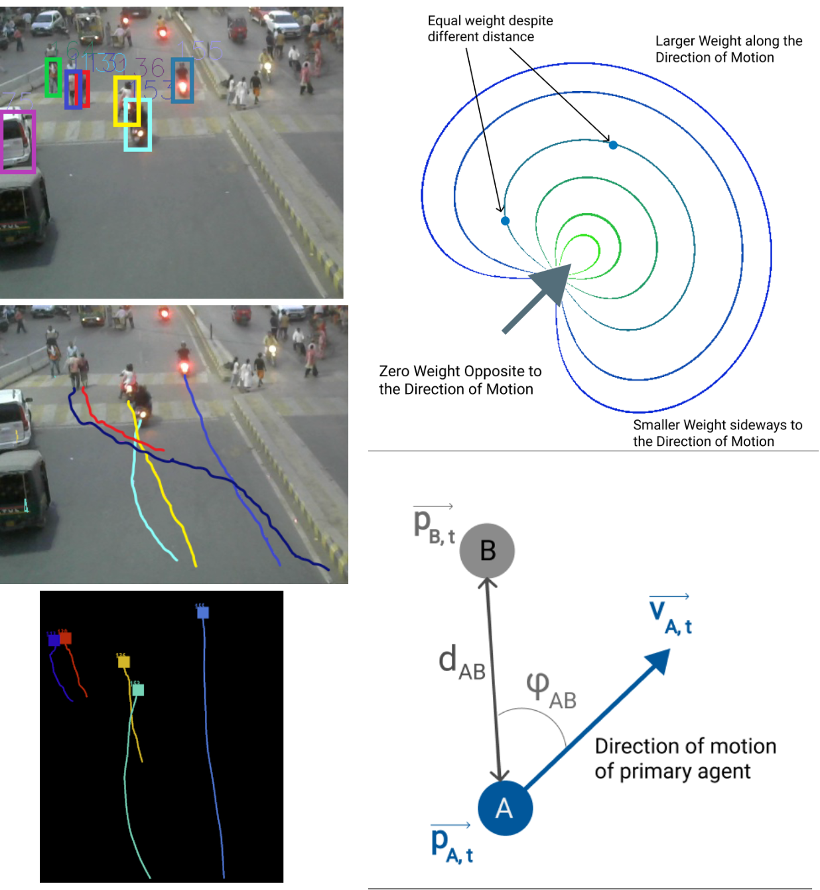
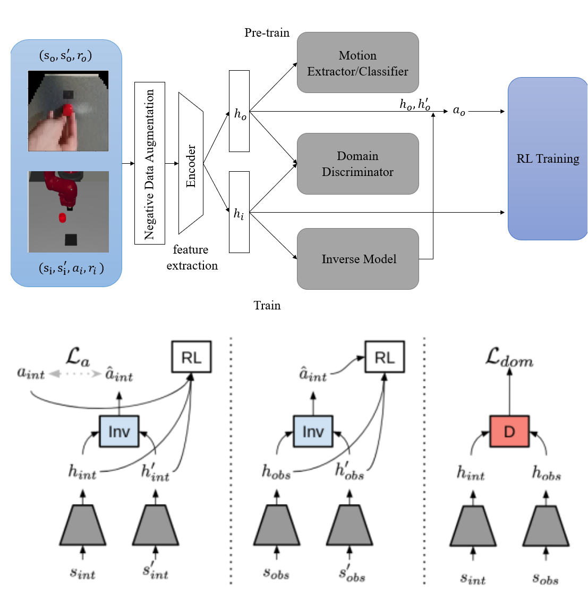
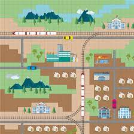
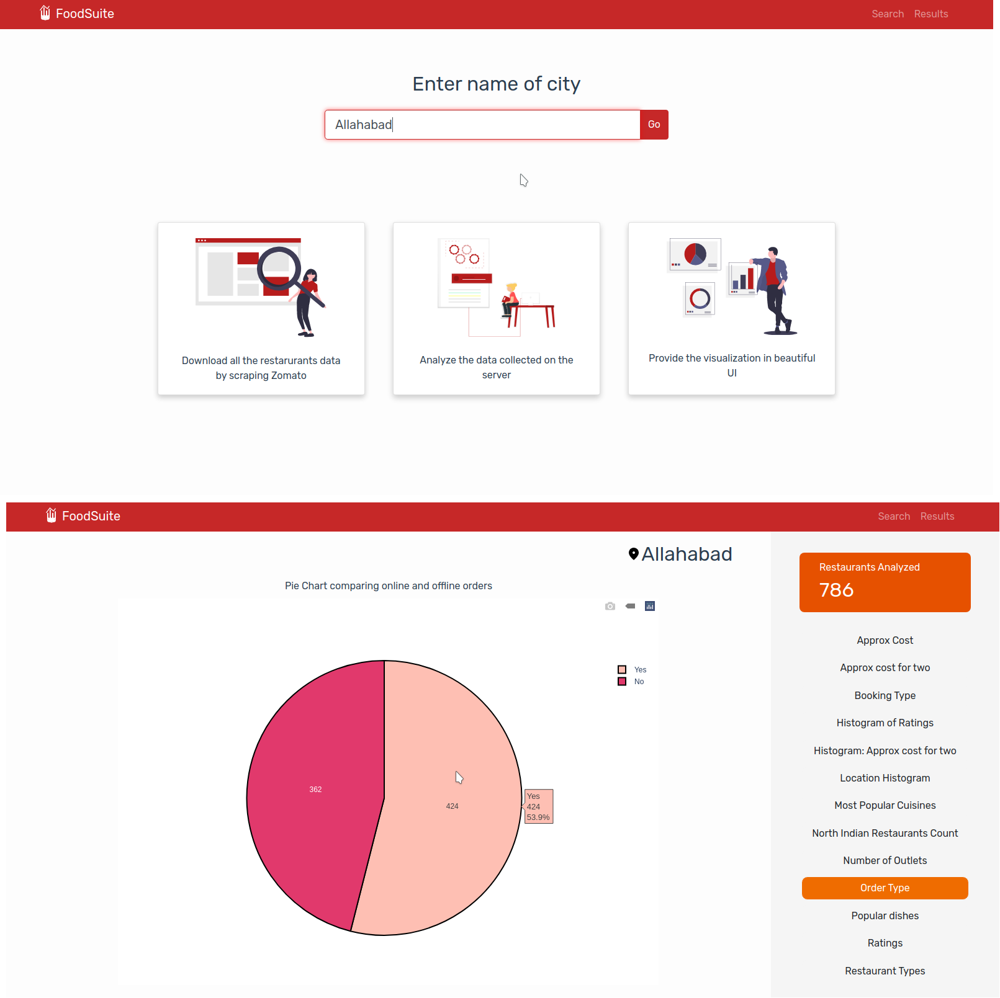

{kind=link}
Research Engineer
1X Technologies · California, USA
Worked with humanoid robots to make them capable of operating in real-world settings such as homes and warehouses.
Hi, I’m Anant. I’m a founding research engineer at a stealth startup, working to make robots more capable and general-purpose so they can become part of daily life. Previously, I was among the first five members of the AI team at 1X Technologies; you can see some of that work here. Before that, I was a graduate research assistant at NYU’s CILVR Lab, advised by Lerrel Pinto and Soumith Chintala. Outside work, I take photographs.
1X Technologies · California, USA
Worked with humanoid robots to make them capable of operating in real-world settings such as homes and warehouses.
CILVR, New York University · New York, USA
Worked on imitation learning, representation learning, and generalizable reinforcement learning in collaboration with Hyundai, advised by Lerrel Pinto.
Temasek Lab, Nanyang Technological University · Singapore
Led development of a meeting-room speech recognition Android application for automatic transcription, and built an image-captioning model using transformers.
CITEC Lab, Bielefeld University · Germany
Used conflict-based search and deep Q-learning on the Flatland environment, reaching third position in round one and sixth in round two.

Science Robotics submission · 2023
We developed an affordable tool for collecting robot demonstrations and used it to assemble the Homes of New York dataset: 13 hours of interaction across 22 homes. A self-supervised representation pretrained on this data improves robot policies in unseen home environments.

ICRA submission · 2023
This work consolidates diverse robotic datasets to train generalist policies across robots, tasks, and environments, improving spatial understanding, generalization to unseen objects, and robustness over robot-specific baselines.

Best Student Paper · RSS 2023
FISH is an imitation-learning approach that learns robust visual skills from less than a minute of human demonstrations. It works across robot morphologies and camera configurations while outperforming prior approaches.

IEEE ITSC · 2022
We combined detection, tracking, and an LSTM-based trajectory model to understand agent interactions in dense heterogeneous traffic, then introduced a weighted elliptical risk model that improved predictive risk analysis by 20% over the baseline.

Research project
We made reinforcement learning from human videos more robust by adding a motion-understanding module that stabilizes cross-domain adaptation. On visual pushing, the approach improved performance by 15% over the baseline.

NeurIPS 2021 Flatland Challenge
We designed tree- and graph-based environment representations for intelligent cost calculation and rerouting. Combining conflict-based search with deep Q-learning reached third place in round one and sixth in round two.

ICAIR · 2020
We combined collaborative filtering, neural classification, and sentiment analysis to model customer food preferences using data collected from Swiggy and Zomato, then presented the results through a web application.